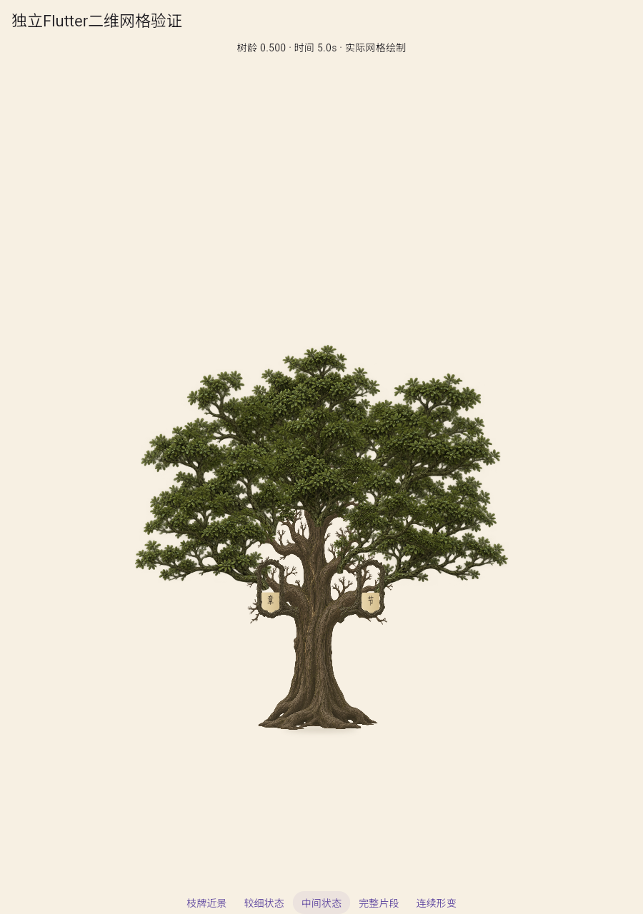
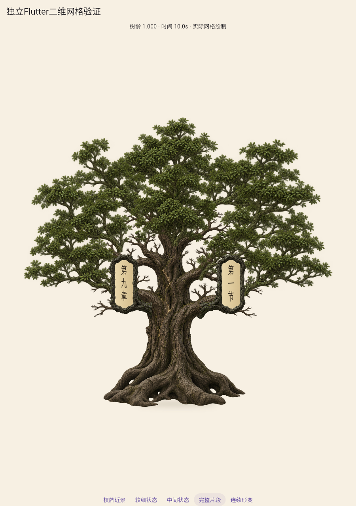
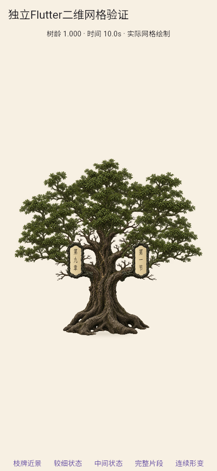

参考主导完整第二套：视觉拒绝
冠层搭接、圆钝根趾和纸面贴合有改善，但幼苗仍有压细古木的碎枝轮廓，早期成长不自然。两轮已用完，停止本套完整造型继续调参；A2未通过。
完整审查 · 运行和源哈希 · 区间审计 · 实体端口审计 · 实际空窗审计 · 旧纸面反例
批准参考 幼苗中龄
幼苗中龄
成熟
手机视口
真实枝牌近景固定900×1280相机，101个实际Flutter状态，0至1树龄、0至10秒，10fps编码非运行帧率。手机430×932仅浏览器视口。